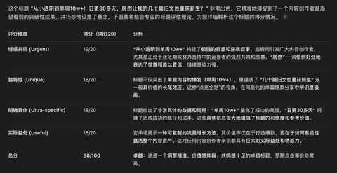
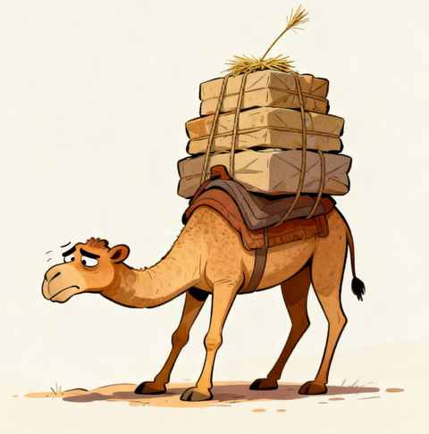

从小透明到单周10w+！日更30多天，居然让我的几十篇旧文也重获新生？！
一、前言
从去年开始在公众号发文，再到今天收到公众号助手推送的创作者周报显示再次周阅读量破10w。

其中绝大多数阅读量都是推荐流量，也是再次尝试日更的一个全新体验，这次和微信公众号的推荐算法息息相关。
二、再次日更的新变化
第二次尝试日更，是因为暑假结束，正式开学要让自己快速调整状态。
相比去年的变化有下面 3 个：
1️⃣ 难度变高
这次是挑战100天日更，难度比去年 21 天的高很多。
本次是从 8 月 31 日开始，每天都发一篇文章，目标是坚持 100 天！
2️⃣ 标题优先
在正式写之前先把储备的选题盘一盘，然后敲定一个选题之后便拟定一个或多个标题让腾讯元宝帮忙打分

元宝会从多个维度分析，然后给到评分，同时也给到一个或多个建议的标题供参考。
PS：Ai 给到的标题别直接使用，有标题党的嫌疑，根据个人喜好微调后方可使用
3️⃣ 定时定点完成文章
大部分时候是在上午开始写，午饭前完成文章的发布。
偶尔晚上觉得某个选题可以马上写点，也会及时写下来，如果当天晚上写好了便定时第二天早上发布，如果没有写好则会在睡前保存好第二天上午继续完成文章，然后写好不检查错别字，简单调整格式之后，就立马发布。
这三个变化，能让我开始写的时候更快的进入状态
三、量很重要！
1️⃣ 每个人的 “ 量 ” 不同
最近两年一直都在坚持跑步，上个月跑量首次达到 200km 以上，因为愈发感受到跑量的重要，现不管是不是垃圾跑量，先把跑量堆上去再说。
写文章与我而言是一样的道理，别人可能写个20篇、30篇、50 篇就熟练了，完成一定量的文章撰写之后就安然的过了新手期能顺利从小透明逐步过渡到熟手。
整体实践下来，对于我而言，100 篇可能才是这个需要积累数量的分水岭。至少要写完 100 篇我才能从新手村挪步到熟手阶段。
真有点像压死骆驼的那最后一根稻草，如果这种稻草不放到骆驼身上，骆驼可能真的就能继续扛。

现在很明确，自己 依然处在 积累量的阶段，和跑步一样继续日拱一卒。
2️⃣ 几十篇旧文也重获新生
在更新的原创文章达到 100 篇之后，发现不少半年乃至一年前写的文章有了互动和阅读量。
顺带着还有一个好处：每天的涨粉量也比之前好很多，可能也是文章数量比之前多不少，各种话题都有一些，看了几篇之后也加个关注。
我的习惯就是这样的，之前取关了很多大号，日常在刷公众号的推荐流的时候会关注一下小账号，因为他们分享的内容足够真实和真诚。
可能也是因为我在写文章的时候会天然不写夸大和标题党的内容，同时在排版上也注重统一性，别小看这些细节，能做到这些的个人创作者是极少数。
四、结语
每个人都适合用写文章的方式来理清思路，不一定要发出来给其他人看，但一定要定期写一写。
完全不同于上学时期写作文，有限制的同时还需要被打分，区分优秀、中等、及格、不及格……
在当下你完全可以跳脱作文的框架：
- 为自己或他人或物品而写
- 无需其他人给你评分
- 也没有人有资格给你评分
相信在尝试的过程中，你也能更好的认识自己，然后慢慢成为更好的自己。